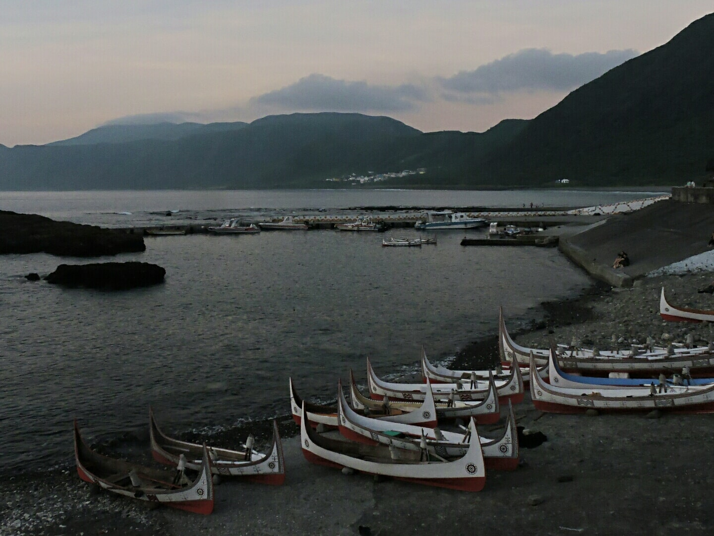
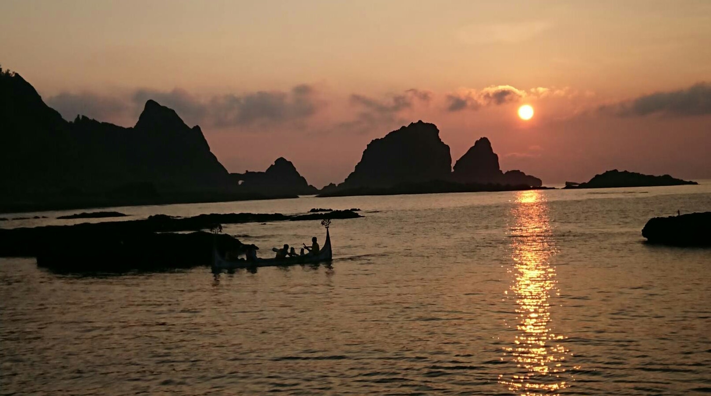
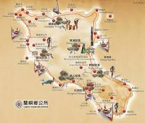

蘭嶼
位於台灣島的東南方，四周環太平洋，是台灣日出最早的地區之一。
島上住戶皆為達悟族原住民，在每年二到六月會舉行飛魚季，飛魚季期間有許多禁忌並且會將停放拼板舟的幾個沙灘封閉。
達悟族男人會划拼板舟出海捕飛魚，老人女人及小孩將會負責處理漁獲並曬成飛魚乾。
六月飛魚季結束後將會有一個重要慶典來感謝祖靈賜與豐收，家家戶戶會將自己家裡種的芋頭地瓜和捕獲的飛魚和大家分享。
在島上會看到許多山羊在路上走或是在海邊吃草，羊的數量甚至比野狗多，牠們是有人養的，並且是權貴的象徵。
蘭嶼的垃圾處理僅有一座掩埋場，甚至無法處理回收垃圾，因而發起了一公斤垃圾運動，除了可以把自己製造的垃圾帶走外，
再額外帶一公斤的回收垃圾回台灣做分類。
現在島上共有兩間7-11，一間在碼頭，另一間在東清，再加上一間農會，大概就是蘭嶼人取得台灣本島食物的唯一途徑。
 |
 |
 |
蘭嶼的清晨 |
蘭嶼的日 |
蘭嶼地圖 |